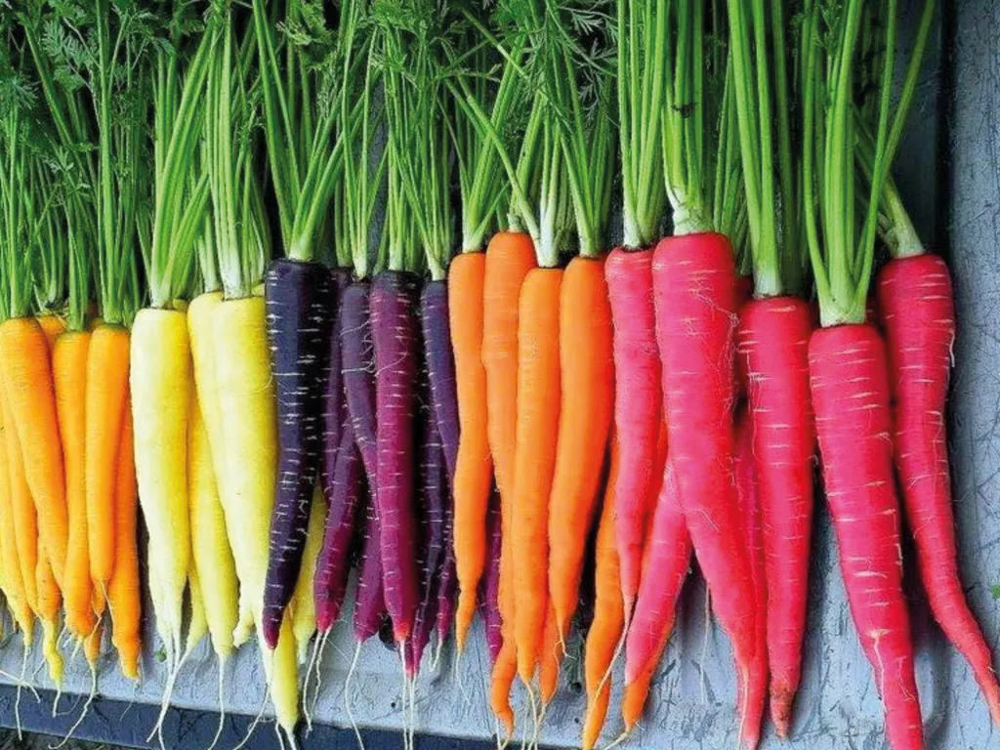
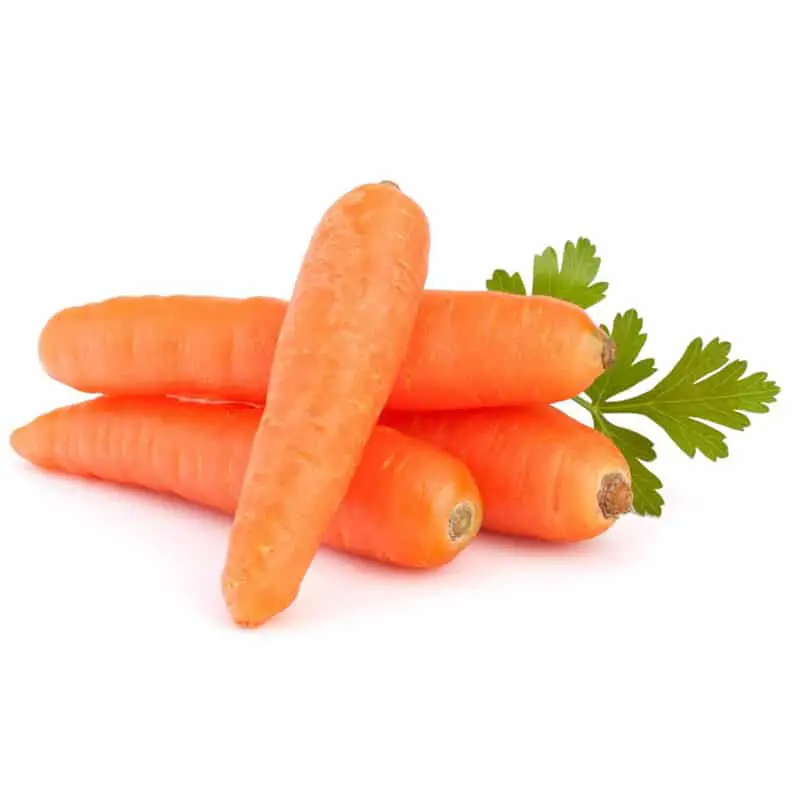
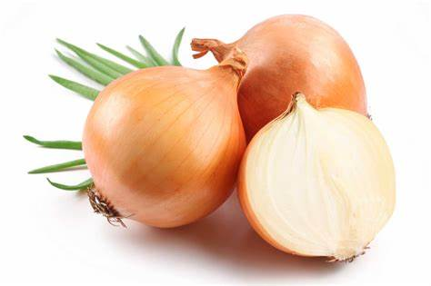
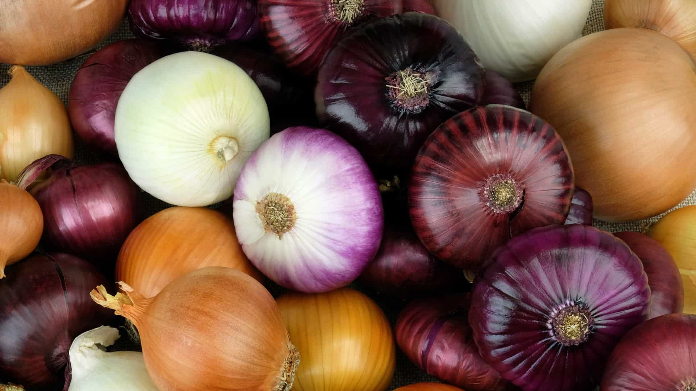
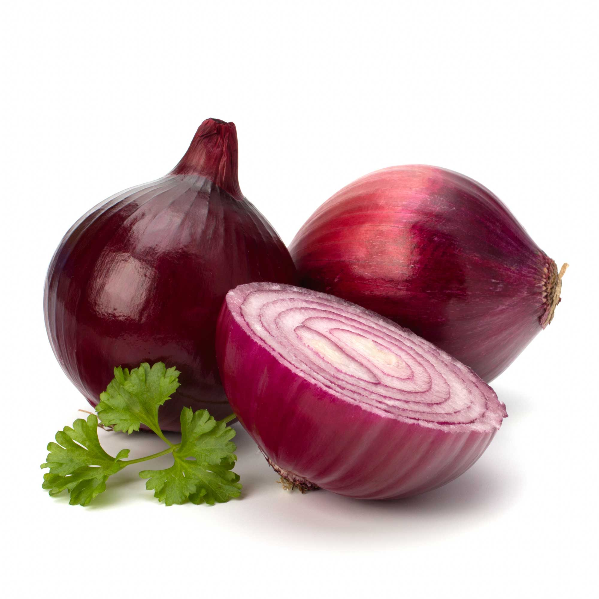
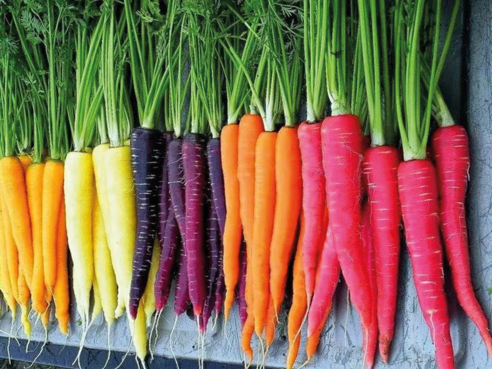
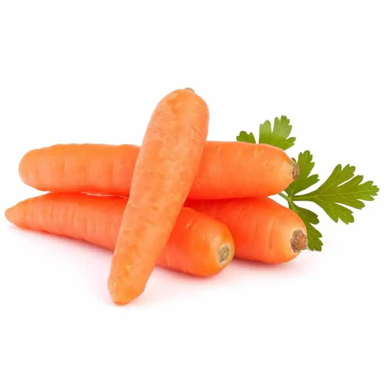
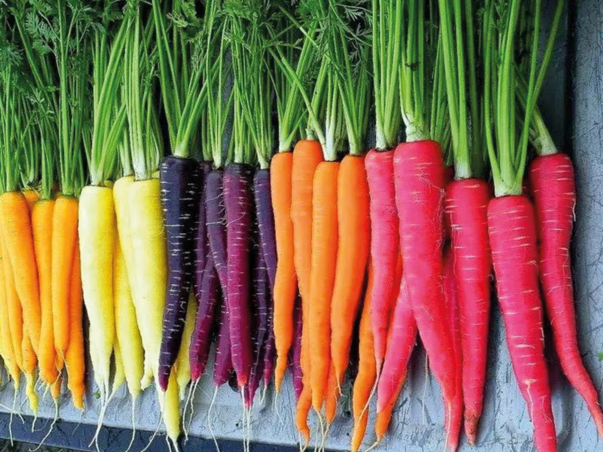
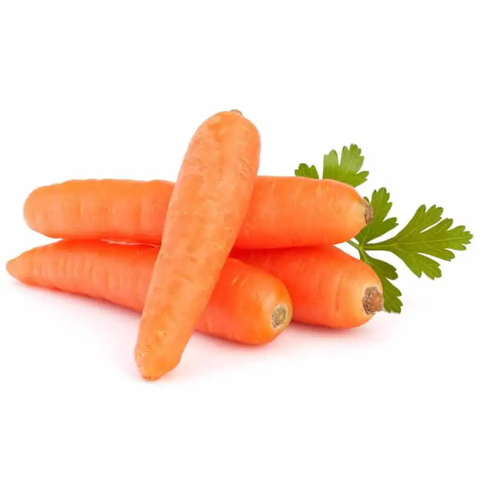

O pepino é um vegetal nutritivo e baixo em calorias, já que é rico em água, minerais e antioxidantes. Possui também diversos benefícios para a saúde como favorecer a perda de peso, manter o organismo hidratado e melhorar o funcionamento do intestino.
Além disso, o pepino ajuda a diminuir a gordura do organismo, o açúcar no sangue e a pressão arterial. Por isso, seu consumo é recomendado para auxiliar no tratamento de doenças como aterosclerose, diabetes e hipertensão arterial.
O pepino também é muito utilizado para refrescar e tonificar a pele, podendo ser consumido em saladas, sucos ou na preparação de máscaras faciais, por exemplo.
Principais benefícios
Os principais benefícios do agrião são:
1. Prevenir a diabetes
Por conter boas quantidades de fibras, o agrião ajuda a equilibrar os níveis de açúcar no sangue, prevenindo a resistência à insulina e diabetes, além de ajudar a controlar a glicemia em quem já possui a doença.
2. Fortalecer os ossos
O agrião é rico em vitamina K, uma vitamina essencial para a formação e fortalecimento dos ossos, evitando a osteoporose e situações como quedas e fraturas. Veja como incluir outros alimentos ricos em vitamina K na dieta.
Além disso, o agrião também tem boas quantidades de cálcio, um mineral que participa da formação e na manutenção da saúde dos ossos.
3. Ajudar na prevenção do câncer
O agrião ajuda a prevenir alguns tipos de câncer, como de pâncreas, de mama ou de cólon, porque contém ótimas quantidades de flavonoides, isotiocianatos e glucosinolatos, compostos bioativos com potente ação antioxidante, que combatem os radicais livres, evitando o surgimento e a multiplicação de células cancerígenas.
4. Prevenir envelhecimento precoce
Por ser uma verdura rica em vitamina C, uma vitamina importante para a produção e absorção de colágeno, o agrião ajuda manter a elasticidade da pele, prevenindo as rugas e o envelhecimento precoce.
O agrião também é rico em glucosinolatos, compostos bioativos com potente ação antioxidante que combatem os radicais livres, um dos responsáveis pelos danos à células saudáveis da pele.
5. Manter a saúde dos olhos
O agrião contém boas quantidades de luteína e zeaxantina, carotenoides presentes nos olhos que ajudam a combater os radicais livres e protegem a retina. Esses compostos são importantes para manter a saúde dos olhos, prevenindo situações como, degeneração macular e catarata associados à idade.
Cenoura


A couve é um vegetal que pertence à família Brassicaceae (como o brócolis ou a couve-flor) e que, por ser rico em vitamina C, A, fibras, antioxidantes e minerais como potássio, cálcio e ferro, ajudam a prevenir e tratar doenças como anemia, câncer e pressão alta.
Existem alguns tipos de couve, como a couve cabocla, a japonesa e a manteiga, podendo ter folhas lisas, como no caso da couve manteiga, ou onduladas, como a couve kale e é um vegetal facilmente encontrado em supermercados e feiras.
Por ser um vegetal bastante versátil, a couve pode ser consumida crua em saladas, refogada, em farofas, bolos, sucos ou no caldo verde, por exemplo.
Principais benefícios
Os principais benefícios da Cenoura são:
1. Fortalece o sistema imunológico
A couve fortalece o sistema imunológico pois é rica em vitamina C e vitaminas do complexo B, que melhoram as funções das células de defesa, ajudando no combate a microrganismos como vírus, bactérias e fungos.
2. Ajuda na perda de peso
A couve possui poucas calorias sendo uma excelente opção que pode ser incluída em dietas para perda de peso.
Além disso, a couve tem boas quantidades de fibras que prolongam a saciedade entre as refeições, ajudando a controlar a fome ao longo do dia
3. Regula o intestino e melhora a flora intestinal
A couve regula o intestino e melhora a saúde da flora intestinal, pois contém fibras, que ajudam na eliminação das fezes e também servem de alimento para as bactérias benéficas do intestino.
4. Melhora a saúde dos ossos
Por conter minerais importantes para manter os ossos fortes, resistentes e saudáveis, como cálcio e fósforo, a couve melhora a saúde dos ossos, prevenindo situações como quedas, fraturas, osteopenia e osteoporose.
5. Previne o envelhecimento precoce
A couve previne o envelhecimento precoce pois é fonte de antioxidantes e vitamina C, que ajudam a proteger a pele contra os danos causados pelos radicais livres.
Além disso, a vitamina C favorece a produção de colágeno, que ajuda a manter a pele firme e hidratada.
Cebola



O brócolis é um vegetal que fornece muitos benefícios para a saúde, como ajudar a diminuir o colesterol, melhorar a digestão, evitar a prisão de ventre, aumentar as defesas do organismo e prevenir doenças cardiovasculares.
Os benefícios do brócolis são devido ao fato de ser rico em fibras, vitamina C, selênio, fitoesterois e compostos conhecidos como glucosinolatos e sulforafanos, garantindo as propriedades antioxidantes, anti-inflamatórias, digestivas e cardioprotetoras desse vegetal.
O brócolis pertence à família Brassicaceae, e pode ser encontrado em supermercados ou feitas locais. Todas as partes do brócolis são comestíveis, incluindo as folhas, as flores e os talos, que podem ser preparados na forma cozida ou ao vapor, além de também poder ser utilizado cru, no preparo de saladas e sucos naturais.
Principais benefícios
Os principais benefícios do Cebola são:
1. Fortalece o sistema imunológico
A couve fortalece o sistema imunológico pois é rica em vitamina C e vitaminas do complexo B, que melhoram as funções das células de defesa, ajudando no combate a microrganismos como vírus, bactérias e fungos.
2. Ajuda na perda de peso
A couve possui poucas calorias sendo uma excelente opção que pode ser incluída em dietas para perda de peso.
Além disso, a couve tem boas quantidades de fibras que prolongam a saciedade entre as refeições, ajudando a controlar a fome ao longo do dia
3. Regula o intestino e melhora a flora intestinal
A couve regula o intestino e melhora a saúde da flora intestinal, pois contém fibras, que ajudam na eliminação das fezes e também servem de alimento para as bactérias benéficas do intestino.
4. Melhora a saúde dos ossos
Por conter minerais importantes para manter os ossos fortes, resistentes e saudáveis, como cálcio e fósforo, a couve melhora a saúde dos ossos, prevenindo situações como quedas, fraturas, osteopenia e osteoporose.
5. Previne o envelhecimento precoce
A couve previne o envelhecimento precoce pois é fonte de antioxidantes e vitamina C, que ajudam a proteger a pele contra os danos causados pelos radicais livres.
Além disso, a vitamina C favorece a produção de colágeno, que ajuda a manter a pele firme e hidratada.

 


